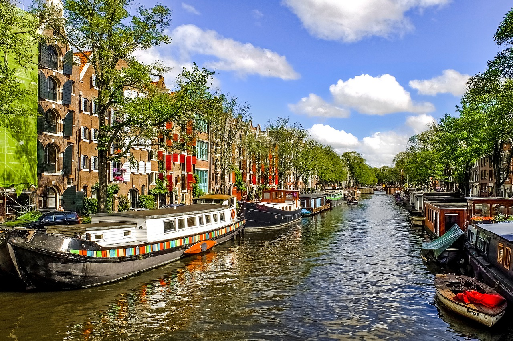

Galeria de Casas Fluviais



As casas fluviais são uma alternativa inovadora e sustentável para quem busca um estilo de vida mais próximo à natureza. Descubra como esses projetos arquitetônicos se adaptam à vida sobre a água.
As casas fluviais são construções que flutuam sobre rios, lagos ou até mesmo oceanos, proporcionando uma experiência única de vida sobre a água. Elas são projetadas para garantir sustentabilidade, conforto e interação direta com o meio ambiente aquático.
Gostou do conceito das casas fluviais? Entre em contato para saber mais ou solicitar um orçamento.